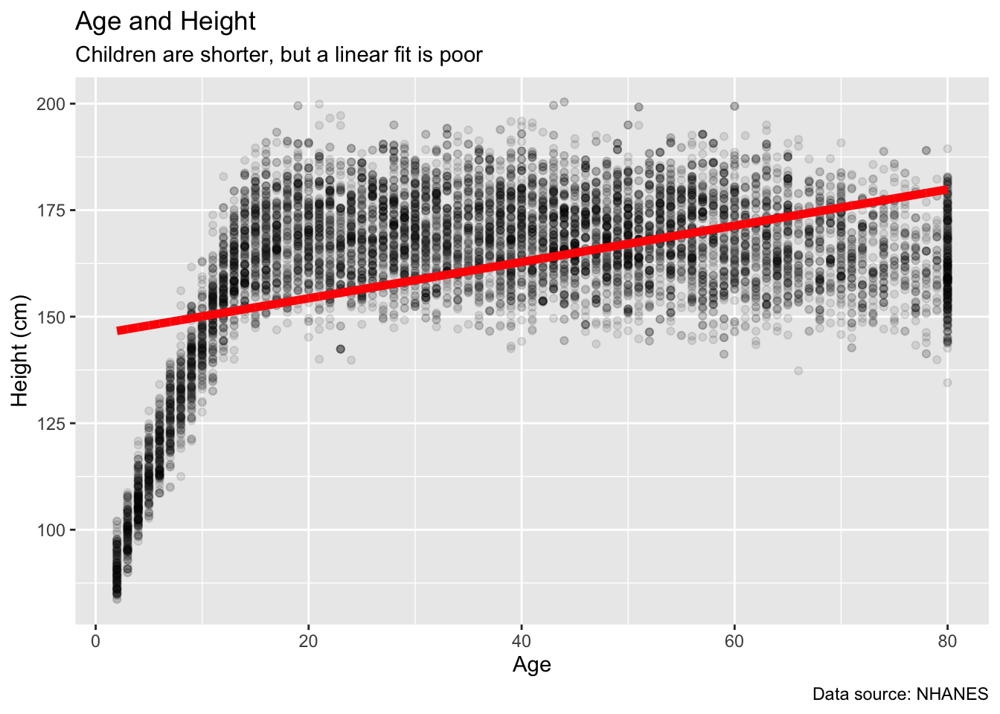
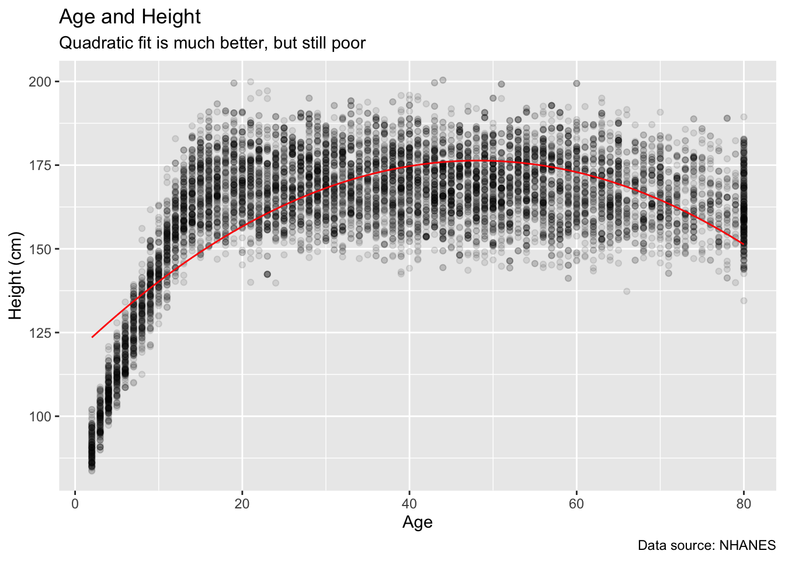
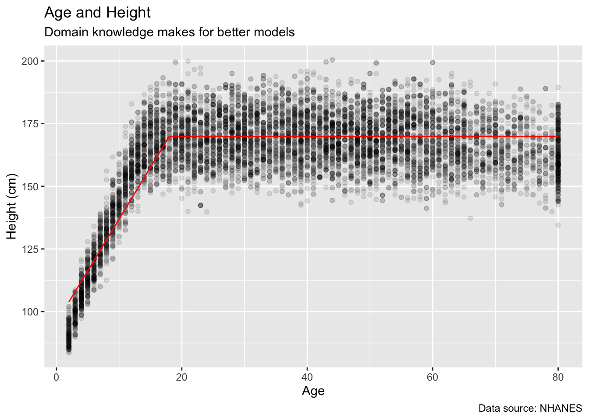
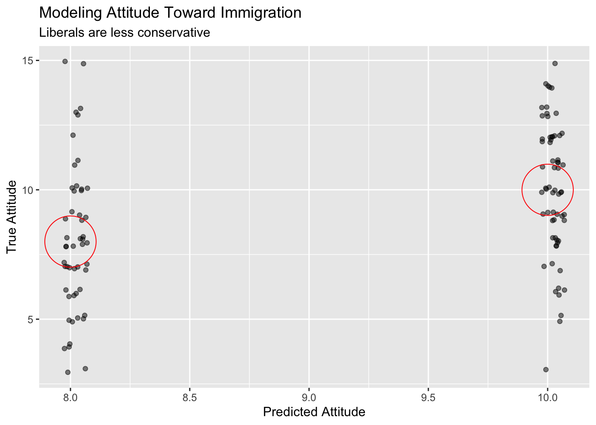
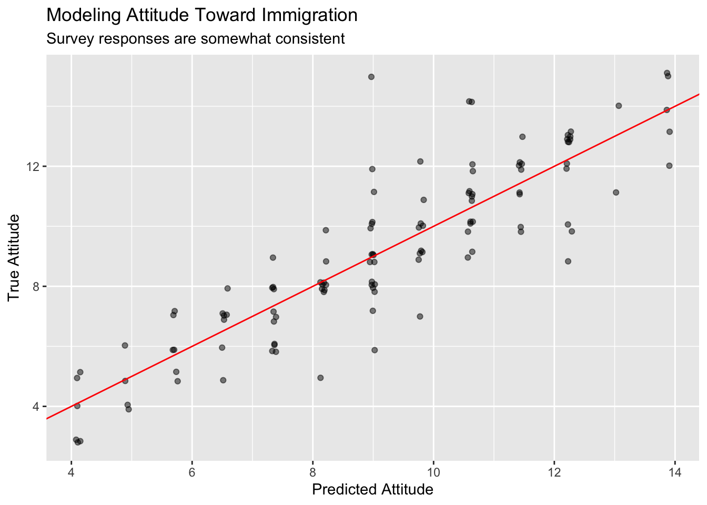

7 Mechanics
Our forecasts are more uncertain that a naive use of our models would suggest.
In our haste to make progress — to get all the way through the process of building, interpreting and using models — we have given short shrift to some of the messy details of model building and evaluation. This chapter fills in those lacunae.
7.1 Transforming variables
It is often convenient to transform a predictor variable so that our model makes more sense.
7.1.1 Centering
Consider a model of income as a function of age.
\[ income_i = \beta_0 + \beta_1 age_i + \epsilon_i\]
We fit this using the trains data from primer.data. We will also be using a new package, broom.mixed, which allows us to tidy regression data for plotting.
fit_1 <- brm(formula = income ~ age,
data = trains,
family = gaussian(),
silent = 2,
refresh = 0,
seed = 45)
fixef(fit_1) Estimate Est.Error Q2.5 Q97.5
Intercept 103852.8995 25270.8777 54103.8562 152150.544
age 894.2228 566.5796 -201.3167 2003.449There is nothing wrong with this model. Yet the interpretation of \(\beta_0\), the intercept in the regression, is awkward. It represents the average income for people of age zero. That is useless! There are no people of zero age in our data. And, even if there were, it would be weird to think about such people taking the commuter train into Boston and filling out our survey forms.
It is easy, however, to transform age into a variable which makes the intercept more meaningful. Consider a new variable, c_age, which is age minus the average age in the sample. Using this centered version of age does not change the predictions or residuals in the model, but it does make the intercept easier to interpret.
trains_2 <- trains |>
mutate(c_age = age - mean(age))
fit_1_c <- brm(formula = income ~ c_age,
data = trains_2,
family = gaussian(),
silent = 2,
refresh = 0,
seed = 16)
fixef(fit_1_c) Estimate Est.Error Q2.5 Q97.5
Intercept 141889.6888 6910.7931 128532.2391 155190.379
c_age 909.3219 568.1943 -250.0184 1972.618The intercept, 141,890, is the expected income for someone with c_age = 0, i.e., someone of an average age in the data, which is around 42.
7.1.2 Scaling
Centering — changing a variable via addition/subtraction — often makes the intercept easier to interpret. Scaling — changing a variable via multiplication/division — often makes it easier to interpret coefficients. The most common scaling method is to divide the variable by its standard deviation.
trains_3 <- trains |>
mutate(s_age = age / sd(age))
fit_1_s <- brm(formula = income ~ s_age,
data = trains_3,
family = gaussian(),
silent = 2,
refresh = 0,
seed = 16)
fixef(fit_1_s) Estimate Est.Error Q2.5 Q97.5
Intercept 103506.67 25525.634 54271.954 153952.84
s_age 10949.15 7002.374 -2828.438 24754.34s_age is age scaled by its own standard deviation. A change in one unit of s_age is the same as a change in one standard deviation of the age, which is about 12. The interpretation of \(\beta_1\) is now:
When comparing two people, one about 1 standard deviation worth of years older than the other, we expect the older person to earn about 11,000 dollars more.
But, because we scaled without centering, the intercept is now back to the (nonsensical) meaning of the expected income for people of age 0.
7.1.3 z-scores
The most common transformation applies both centering and scaling. The base R function scale() subtracts the mean and divides by the standard deviation. A variable so transformed is a “z-score,” meaning a variable with a mean of zero and a standard deviation of one. Using z-scores makes interpretation easier, especially when we seek to compare the importance of different predictors.
trains_4 <- trains |>
mutate(z_age = scale(age))
fit_1_z <- brm(formula = income ~ z_age,
data = trains_4,
family = gaussian(),
silent = 2,
refresh = 0,
seed = 16)
fixef(fit_1_z) Estimate Est.Error Q2.5 Q97.5
Intercept 141649.82 6968.046 127466.909 154700.35
z_age 10998.74 7093.726 -2920.582 25277.06The two parameters are easy to interpret after this transformation.
The expected income of someone of average age, which is about 42 in this study, is about 142,000 dollars.
When comparing two individuals who differ in age by one standard deviation, which is about 12 years in this study, the older person is expected to earn about 11,000 dollars more than the younger.
Note that, when using z-scores, we would often phrase this comparison in terms of “sigmas.” One person is “one sigma” older than another person means that they are one standard deviation older. This is simple enough, once you get used to it, but also confusing since we are already using the word “sigma” to mean \(\sigma\), the standard deviation of \(\epsilon_i\). Alas, language is something we deal with rather than something we control. You will hear the same word “sigma” applied to both concepts, even in the same sentence. Determine meaning by context.
7.1.4 Taking logs
It is often helpful to take the log of predictor variables, especially in cases in which their distribution is skewed. You should generally only take the log of variables for which all the values are strictly positive. The log of a negative number is not defined. Consider the number of registered voters (rv13) at each of the polling stations in kenya.
Show the code
x <- kenya |>
filter(rv13 > 0)
rv_p <- x |>
ggplot(aes(rv13)) +
geom_histogram(bins = 100) +
labs(x = "Registered Voters",
y = NULL)
log_rv_p <- x |>
ggplot(aes(log(rv13))) +
geom_histogram(bins = 100) +
labs(x = "Log of Registered Voters",
y = NULL) +
expand_limits(y = c(0, 175))
rv_p + log_rv_p +
plot_annotation(title = 'Registered Votes In Kenya Communities',
subtitle = "Taking logs helps us deal with outliers")
Most experienced data scientists would use the log of rv13 rather than the raw value. Comments:
We do not know the “true” model. Who is to say that a model using the raw value is right or wrong?
Check whether or not this choice meaningfully affects the answer to your question. Much of the time, it won’t. That is, our inferences are often fairly “robust” to small changes in the model. If you get the same answer with
rv13as fromlog_rv13, then no one cares which you use.Follow the conventions in your field. If everyone does X, then you should probably do X, unless you have a good reason not to. If you do have such a reason, explain it prominently.
Most professionals, when presented with data distributed like
rv13, would take the log. Professionals (irrationally?) hate outliers. Any transformation which makes a distribution look more normal is generally considered a good idea.
Many of these suggestions apply to every aspect of the modeling process.
7.1.5 Adding transformed terms
Instead of simply transforming variables, we can add more terms which are transformed versions of a variable. Consider the relation of height to age in nhanes. Let’s start by dropping the missing values.
Fit and plot a simple linear model:
nhanes_1 <- brm(height ~ age,
data = no_na_nhanes,
family = gaussian(),
silent = 2,
refresh = 0,
seed = 16)
no_na_nhanes |>
ggplot(aes(x = age, y = height)) +
geom_point(alpha = 0.1) +
geom_line(aes(y = fitted(nhanes_1)[, "Estimate"]),
color = "red",
linewidth = 2) +
labs(title = "Age and Height",
subtitle = "Children are shorter, but a linear fit is poor",
x = "Age",
y = "Height (cm)",
caption = "Data source: NHANES")
That is not a very good model, obviously.
Adding a quadratic term makes it better. (Note the need for I() in creating the squared term within the formula argument.)
nhanes_2 <- brm(height ~ age + I(age^2),
data = no_na_nhanes,
family = gaussian(),
silent = 2,
refresh = 0,
seed = 27)
no_na_nhanes |>
ggplot(aes(x = age, y = height)) +
geom_point(alpha = 0.1) +
geom_line(aes(y = fitted(nhanes_2)[, "Estimate"]),
color = "red") +
labs(title = "Age and Height",
subtitle = "Quadratic fit is much better, but still poor",
x = "Age",
y = "Height (cm)",
caption = "Data source: NHANES")
Still, we have not made use of our background knowledge in creating these variables. We know that people don’t get any taller after age 18 or so. Let’s create variables which capture that break.
nhanes_3 <- brm(height ~ I(ifelse(age > 18, 18, age)),
data = no_na_nhanes,
family = gaussian(),
silent = 2,
refresh = 0,
seed = 87)
no_na_nhanes |>
ggplot(aes(x = age, y = height)) +
geom_point(alpha = 0.1) +
geom_line(aes(y = fitted(nhanes_3)[, "Estimate"]),
color = "red") +
labs(title = "Age and Height",
subtitle = "Domain knowledge makes for better models",
x = "Age",
y = "Height (cm)",
caption = "Data source: NHANES")
The point is that we should not take the variables we receive as given. We are the captains of our souls. We transform variables as needed.
7.1.6 Transforming the outcome variable
Transforming predictor variables is uncontroversial. It does not matter much. Change most continuous predictor variables to \(z\)-scores and you won’t go far wrong. Or keep them in their original form, and take care with your interpretations. It’s all good.
Transforming the outcome variable is a much more difficult question. Imagine that we seek to create a model which explains rv13 from the kenya tibble. Should we transform it?
Maybe? There are no right answers. A model with
rv13as the outcome variable is different from a model withlog(rv13)as the outcome. The two are not directly comparable.Much of the same advice with regard to taking logs of predictor variables applies here as well.
See Gelman, Hill, and Vehtari (2020) for more useful discussion.
7.1.7 Interpreting coefficients
When we interpret coefficients, it is important to know the difference between across unit and within unit comparisons. When we compare across unit, meaning comparing Joe and George, we are not looking at a causal relationship. Within unit discussions, where we are comparing Joe under treatment versus Joe under control, are causal. This means that within unit interpretation is only possible in causal models, where we are studying one unit under two conditions. When we talk about two potential outcomes, we are discussing the same person or unit under two conditions.
To put this in terms of the Preceptor tables, a within unit comparison is looking at one row of data: the data for Joe under control and the data for Joe under treatment. We are comparing one unit, or (in this case) one person, to itself under two conditions. An across unit comparison is looking at multiple rows of data, with a focus on differences across columns. We are looking at differences without making any causal claims. We are predicting, but we are not implying causation.
The magnitude of the coefficients in linear models are relatively easy to understand. That is not true for logistic regressions. In that case, use the Divide-by-Four rule: Take a logistic regression coefficient (other than the constant term) and divide it by 4 to get an upper bound on the predictive difference corresponding to a unit difference in that variable. All this means is that, when evaluating if a predictor is helpful in a logistic regression only, divide the coefficient by four.
7.2 Selecting variables
How do we decide which variables to include in a model? There is no one right answer to this question.
7.2.1 General guidelines for selecting variables
When deciding which variables to keep or discard in our models, our advice is to keep a variable X if any of the following circumstances apply:
The variable has a large and well-estimated coefficient. This means, roughly, that the 95% confidence interval excludes zero. “Large” can only be defined in the context of the specific model. Speaking roughly, removing a variable with a large coefficient meaningfully changes the predictions of the model.
Underlying theory/observation suggests that X has a meaningfully connection to the outcome variable.
If the variable has a small standard error relative to the size of the coefficient, it is general practice to include it in our model to improve predictions. The rule of thumb is to keep variables for which the estimated coefficient is more than two standard errors away from zero. Some of these variables won’t “matter” much to the model. That is, their coefficients, although well-estimated, are small enough that removing the variable from the model will not affect the model’s predictions very much.
If the standard error is large relative to the coefficient, i.e., if the magnitude of the coefficient is more than two standard errors from zero, and we find no other reason to include it in our model, we should probably remove the variable from your model.
The exception to this rule is if the variable is relevant to answering a question which we have. For example, if we want to know if the ending attitude toward immigration differs between men and women, we need to include
genderin the model, even if its coefficient is small and closer to zero than two standard errors.It is standard in your field to include X in such regressions.
Your boss/client/reviewer/supervisor wants to include X.
Let’s use the trains data set to evaluate how helpful certain variables are to creating an effective model, based on the guidelines above.
7.2.2 Variables in the trains data set
To look at our recommendations in practice, let’s focus on the trains data set. The variables in trains include gender, liberal, party, age, income, att_start, treatment, and att_end. Which variables would be best to include in a model?
7.2.3 att_end ~ treatment + att_start
First, let’s look at a model with a left hand variable, att_end, and two right side variables, treatment and att_start.
fit_1_model <- brm(att_end ~ treatment + att_start,
data = trains,
family = gaussian(),
silent = 2,
refresh = 0,
seed = 16)
fixef(fit_1_model) Estimate Est.Error Q2.5 Q97.5
Intercept 2.3387046 0.4284036 1.4809571 3.1766254
treatmentControl -0.9513246 0.2478740 -1.4390199 -0.4534002
att_start 0.7975082 0.0399413 0.7205094 0.8773148How do we decide which variables are useful? First, let’s interpret our coefficients.
The variable before the tilde,
att_end, is our outcome.The explanatory variables are
treatment, which says whether a commuter relieved treatment or control conditions, andatt_start, which measures attitude at the start of the study.The 95% confidence interval for
att_endis equal to the coefficient– 2.34– plus or minus two standard errors. This shows the estimate for theatt_endwhere the commuters were under treatment and were not in the control group.The variable
treatmentControlrepresents the offset inatt_endfrom the estimate for ourIntercept. This offset is for the group of people that were in the Control group. To find the estimatedatt_endfor those in this group, you must add the median fortreatmentControlto theIntercept.The variable
att_startmeasures the expected difference inatt_endfor every one unit increase inatt_start.
The causal effect of the variable treatmentControl is -0.95. This means that, compared with the predicted att_end for groups under treatment, those in the control group have a predicted attitude that is almost one entire point lower. As we can see, this is a large and well estimated coefficient. Recall that this means, roughly, that the 95% confidence interval excludes zero. To calculate the 95% confidence interval, we take the coefficient plus or minus two standard errors. As we can see, the 95% confidence interval does exclude zero, suggesting that treatment is a worthy variable.
In addition to being meaningful, which is enough to justify inclusion in our model, this variable satisfies a number of other qualifications: - The variable has a small standard error. - The variable is considered an indicator variable, which separates two groups of significance (treatment and control) that we would like to study.
The variable att_start, with a coefficient of 0.8, is also meaningful.
Conclusion: keep both variables! treatment and att_start are both significant, as well as satisfying other requirements in our guidelines. They are more than worthy of inclusion in our model.
7.2.4 income ~ age + liberal
Now, we will look at income as a function of age and liberal, a proxy for political party.
fit_2_model <- brm(income ~ age + liberal,
data = trains,
family = gaussian(),
silent = 2,
refresh = 0,
seed = 16)
fixef(fit_2_model) Estimate Est.Error Q2.5 Q97.5
Intercept 110315.102 24676.374 63166.27383 158173.664
age 1080.188 566.713 -22.75402 2177.090
liberalTRUE -32434.045 13909.045 -59756.44978 -5266.503Great! We have an estimate for income of those who fall into the category of liberalFALSE, as well as data on our right hand side variables of age and liberalTRUE.
First, let’s interpret our coefficients.
The variable before the tilde,
income, is our outcome.The explanatory variables are
liberal, a logical value of TRUE or FALSE, andage, a numeric variable.The
Interceptis estimating income whereliberal == FALSE. Therefore, it is the estimated income for commuters that are not liberals and who haveage = 0. The estimate forageis showing the increase in income with every additional year of age.The estimate for
liberalTRUErepresents the offset in predicted income for commuters who are liberal. To find the estimate, we must add the coefficient to our(Intercept)value. We see that, on average, liberal commuters make less money.
It is important to note that we are not looking at a causal relationship for either of these explanatory variables. We are noting the differences between two groups, without considering causality. This is known as an across unit comparison. When we compare across unit we are not looking at a causal relationship.
When comparing liberalTRUE with our (Intercept), recall that the Intercept is calculating income for the case where liberal == FALSE. As we can see, then, the coefficient for liberalTRUE, -32,434, shows that the liberals in our data set make less on average than non-liberals. The coefficient is large relative to the Intercept and, with rough mental math, we see that the 95% confidence interval excludes 0. Therefore, liberal is a helpful variable.
The variable age, however, does not appear to have a meaningful impact on our Intercept. The coefficient of age is low and the 95% confidence interval does not exclude 0.
Conclusion: definitely keep liberal! age is less clear. It is really a matter of preference at this point.
7.2.5 Final thoughts
Now that we have looked at three cases of variables and decided whether they should be included, let’s discuss the concept of selecting variables generally.
The variables we decided to keep and discard are not necessarily the variables you would keep or discard, or the variables that any other data scientist would keep or discard. It is much easier to keep a variable than it is to build a case for discarding a variable. Variables are helpful even when not significant, particularly when they are indicator variables which may separate the data into two groups that we want to study.
The process of selecting variables – though we have guidelines – is complicated. There are many reasons to include a variable in a model. The main reasons to exclude a variable are if the variable isn’t significant or if the variable has a large standard error.
7.3 Comparing models in theory
Deciding which variables to include in a model is a subset of the larger question: How do we decide which model, out of the set of possible models, to choose?
Consider two models which explain attitudes to immigration among Boston commuters.
fit_liberal <- brm(att_end ~ liberal,
data = trains,
family = gaussian(),
silent = 2,
refresh = 0,
seed = 12)
fixef(fit_liberal) Estimate Est.Error Q2.5 Q97.5
Intercept 10.024922 0.345711 9.32136 10.6974615
liberalTRUE -2.001268 0.523003 -3.02537 -0.9764544fit_att_start <- brm(att_end ~ att_start,
data = trains,
family = gaussian(),
silent = 2,
refresh = 0,
seed = 37)
fixef(fit_att_start) Estimate Est.Error Q2.5 Q97.5
Intercept 1.6546839 0.41144428 0.8643464 2.4591489
att_start 0.8146102 0.04254966 0.7299836 0.8971717They both seem like good models! The results make sense. People who are liberal have more liberal attitudes about immigration, so we would expect their att_end scores to be lower. We would also expect people to provide similar answers in two surveys administered a week or two apart. It makes sense that those with higher (more conservative) values for att_start would also have higher values for att_end.
How do we choose between these models?
7.3.1 Better models make better predictions
The most obvious criteria for comparing models is the accuracy of the predictions. For example, consider the use of liberal to predict att_end.
Show the code
trains |>
mutate(pred_liberal = fitted(fit_liberal)[,"Estimate"]) |>
ggplot(aes(x = pred_liberal, y = att_end)) +
geom_jitter(width = 0.05, height = 0.2, alpha = 0.5) +
# Add a red circle where our predictions are most accurate (where the x and y
# values are the same, which is where our predictions = the true attitudes).
# pch = 1 makes the inside of the point translucent to show the number of
# correct predictions.
annotate("point", x = 8, y = 8, size = 20, pch = 1, color = "red") +
annotate("point", x = 10, y = 10, size = 20, pch = 1, color = "red") +
labs(title = "Modeling Attitude Toward Immigration",
subtitle = "Liberals are less conservative",
x = "Predicted Attitude",
y = "True Attitude")
Because there are only two possible values for liberal — TRUE and FALSE — there are only two predictions which this model will make: about 10 for liberal == FALSE and about 8 for liberal == TRUE. (The points in the above plot are jittered.) For some individuals, these are perfect predictions. For others, they are poor predictions. the red circles on our plot illustrate the areas where our predictions are equal to true values. As we can see, the model isn’t great at predicting attitude end. (Note the two individuals who are liberal == TRUE, and who the model thinks will have att_end == 8, but who have att_end == 15. The model got them both very, very wrong.)
Consider our second model, using att_start to forecast att_end.
Show the code
trains |>
mutate(pred_liberal = fitted(fit_att_start)[,"Estimate"]) |>
ggplot(aes(x = pred_liberal, y = att_end)) +
geom_jitter(width = 0.05, height = 0.2, alpha = 0.5) +
# Insert red line where our predictions = the truth using geom_abline with an
# intercept, slope, and color.
geom_abline(intercept = 0, slope = 1, color = "red") +
labs(title = "Modeling Attitude Toward Immigration",
subtitle = "Survey responses are somewhat consistent",
x = "Predicted Attitude",
y = "True Attitude")
Because att_end takes on 13 unique values, the model makes 13 unique predictions. Some of those predictions are perfect! But others are very wrong. The red line shows the points where our predictions match the truth. Note the individual with a predicted att_end of around 9 but with an actual value of 15. That is a big miss!
Rather than looking at individual cases, we need to look at the errors for all the predictions. Fortunately, a prediction error is the same thing as a residual, which is easy enough to calculate.
trains |>
select(att_end, att_start, liberal) |>
mutate(pred_lib = fitted(fit_liberal)[,"Estimate"]) |>
mutate(resid_lib = pred_lib - att_end) |>
mutate(pred_as = fitted(fit_liberal)[,"Estimate"]) |>
mutate(resid_as = pred_as - att_end)# A tibble: 115 × 7
att_end att_start liberal pred_lib resid_lib pred_as resid_as
<dbl> <dbl> <lgl> <dbl> <dbl> <dbl> <dbl>
1 11 11 FALSE 10.0 -0.975 10.0 -0.975
2 10 9 FALSE 10.0 0.0249 10.0 0.0249
3 5 3 TRUE 8.02 3.02 8.02 3.02
4 11 11 FALSE 10.0 -0.975 10.0 -0.975
5 5 8 TRUE 8.02 3.02 8.02 3.02
6 13 13 FALSE 10.0 -2.98 10.0 -2.98
7 13 13 FALSE 10.0 -2.98 10.0 -2.98
8 11 10 FALSE 10.0 -0.975 10.0 -0.975
9 12 12 FALSE 10.0 -1.98 10.0 -1.98
10 10 9 FALSE 10.0 0.0249 10.0 0.0249
# ℹ 105 more rowsLet’s look at the square root of the average squared error.
trains |>
select(att_end, att_start, liberal) |>
mutate(lib_err = (fitted(fit_liberal)[,"Estimate"] - att_end)^2) |>
mutate(as_err = (fitted(fit_att_start)[,"Estimate"] - att_end)^2) |>
summarize(lib_sigma = sqrt(mean(lib_err)),
as_sigma = sqrt(mean(as_err))) # A tibble: 1 × 2
lib_sigma as_sigma
<dbl> <dbl>
1 2.68 1.35There are many different measures of the error which we might calculate. The squared difference is most common for historical reasons: it was the mathematically most tractable in the pre-computer age. Having calculated a squared difference for each observation, we can sum them or take their average or take the square root of their average. All produce the same relative ranking, but the last is most popular because it (more or less) corresponds to the estimated \(\sigma\) for a linear model. Note how these measures are the same as the ones produced by the Bayesian models created above.
Sadly, it is not wise to simply select the model which fits the data best because doing so can be misleading. After all, you are cheating! You are using that very data to select your parameters and then, after using the data once, turning around and “checking” to see how well your model fits the data. It better fit! You used it to pick your parameters! This is the danger of overfitting.
7.3.2 Beware overfitting
One of the biggest dangers in data science is overfitting, using a model with too many parameters which fits the data we have too well and, therefore, works poorly on data we have yet to see. Consider a simple example with 10 data points.

What happens when we fit a model with one predictor?

That is a reasonable model. It does not fit the data particularly well, but we certainly believe that higher values of x are associated with higher values of y. A linear fit is not unreasonable.
But we can also use some of the lessons from above and try a quadratic fit by adding \(x^2\) as a predictor.

Is this a better model? Maybe?
But why stop at adding \(x^2\) to the regression? Why not add \(x^3\), \(x^4\) and all the way to \(x^9\)? When we do so, the fit is much better.
Show the code
nine_pred <- lm(y ~ poly(x, 9),
data = ovrftng)
newdata <- tibble(x = seq(1, 10, by = 0.01),
y = predict(nine_pred,
newdata = tibble(x = x)))
ovrftng |>
ggplot(aes(x, y)) +
geom_point() +
geom_line(data = newdata,
aes(x, y)) +
labs(title = "`y` as a 9-Degree Polynomial Function of `x`") +
scale_x_continuous(breaks = seq(2, 10, 2)) +
scale_y_continuous(breaks = seq(2, 10, 2)) 
If the only criteria we cared about was how well the model predicts using the data on which the parameters were estimated, then a model with more parameters will always be better. But that is not what truly matters. What matters is how well the model works on data which was not used to create the model.
7.3.3 Better models make better predictions on new data
The most sensible way to test a model is to use the model to make predictions and compare those predictions to new data. After fitting the model using stan_glm, we would use posterior_predict to obtain simulations representing the predictive distribution for new cases. For instance, if we were to predict how someone’s attitude changes toward immigration among Boston commuters based on political affiliation, we would want to go out and test our theories on new Boston commuters.
When thinking of generalization to new data, it is important to consider what is relevant new data in the context of the modeling problem. Some models are used to predict the future and, in those cases, we can wait and eventually observe the future and check how good our model is for making predictions. Often models are used to obtain insight to some phenomenon without immediate plan for predictions. This is the case with our Boston commuters example. In such cases, we are also interested whether learned insights from on part of the data generalizes to other parts of the data. For example, if we know how political attitudes informed future immigration stances in Boston commuters, we may want to know if those same conclusions could generalize to train commuters in different locations.
Even if we had detected clear problems with our predictions, this would not necessarily mean that there is anything wrong with the model as fit to the original data set. However, we would need to understand it further before generalizing to other commuters.
Often, we would like to evaluate and compare models without waiting for new data. One can simply evaluate predictions on the observed data. But since these data have already been used to fit the model parameters, these predictions are optimistic.
In cross validation, part of the data is used to fit the model and the rest of the data—the hold-out set—is used as a proxy for future data. When there is no natural prediction task for future data, we can think of cross validation as a way to assess generalization from one part of the data to another part.
In any form of cross validation, the model is re-fit leaving out one part of the data and then the prediction for the held-out part is evaluated. In the next section, we will look at a type of cross validation called leave-one-out (LOO) cross validation.
7.4 Comparing models in practice
To compare models without waiting for new data, we evaluate predictions on the observed data. However, due to the fact that the data has been used to fit the model parameters, our predictions are often optimistic when assessing generalization.
In cross validation, part of the data is used to fit the model, while the rest of the data is used as a proxy for future data. We can think of cross validation as a way to assess generalization from one part of the data to another part. How do we do this?
We can hold out individual observations, called leave-one-out (LOO) cross validation; or groups of observations, called leave-one-group-out cross validation; or use past data to predict future observations, called leave-future-out cross validation. When we perform cross validation, the model is re-fit leaving out one part of the data and then the prediction for the held-out part is evaluated.
For our purposes, we will be performing cross validation using leave-one-out (LOO) cross validation.
7.4.1 Cross validation using loo()
To compare models using leave-one-out (LOO) cross validation, one piece of data is excluded from our model. The model is then re-fit and makes a prediction for the missing piece of data. The difference between the predicted value and the real value is calculated. This process is repeated for every row of data in the data set.
In essence: One piece of data is excluded from our model, the model is re-fit, the model attempts to predict the value of the missing piece, we compare the true value to the predicted value, and we assess the accuracy of our model’s prediction. This process occurs for each piece of data, allowing us to assess the model’s accuracy in making predictions.
To perform leave-one-out(LOO) cross validation, we will be using the function loo() from an R package. This is how we will determine which model is superior for our purposes.
First, we will refamiliarize ourselves with our first model, fit_liberal.
Show the code
fixef(fit_liberal) Estimate Est.Error Q2.5 Q97.5
Intercept 10.024922 0.345711 9.32136 10.6974615
liberalTRUE -2.001268 0.523003 -3.02537 -0.9764544Now, we will perform loo() on our model and look at the results.
Show the code
loo_liberal <- loo(fit_liberal)
loo_liberal
Computed from 4000 by 115 log-likelihood matrix.
Estimate SE
elpd_loo -279.6 7.5
p_loo 3.0 0.5
looic 559.2 15.0
------
MCSE of elpd_loo is 0.0.
MCSE and ESS estimates assume MCMC draws (r_eff in [0.8, 1.0]).
All Pareto k estimates are good (k < 0.7).
See help('pareto-k-diagnostic') for details.What does any of this mean?
-
elpd_loois the estimated log score along with a standard error representing uncertainty due to using only 115 data points. -
p_loois the estimated “effective number of parameters” in the model. -
looicis the LOO information criterion, −2 elpd_loo, which we compute for comparability to deviance.
For our purposes, we mostly need to focus on elpd_loo. Let’s explain, in more depth, what this information means.
Basically, when we run loo(), we are telling R to take a piece of data out of our data set, re-estimate all parameters, and then predict the value for the missing piece of data. The value for elpd_loo() is based off of how close our estimate was to the truth. Therefore, elpd_loo() values inform us of the effectiveness of our model in predicting data it has not seen before.
The higher our value for elpd_loo, the better our model performs. This means that, when comparing models, we want to select the model with the higher value for elpd_loo.
Let’s turn our attention to our second model. To begin, let’s observe the qualities of fit_att_start once again.
Show the code
fixef(fit_att_start) Estimate Est.Error Q2.5 Q97.5
Intercept 1.6546839 0.41144428 0.8643464 2.4591489
att_start 0.8146102 0.04254966 0.7299836 0.8971717Great! Now, let’s perform loo() on this model.
Show the code
loo_att_start <- loo(fit_att_start)
loo_att_start
Computed from 4000 by 115 log-likelihood matrix.
Estimate SE
elpd_loo -201.6 12.4
p_loo 4.1 1.7
looic 403.2 24.9
------
MCSE of elpd_loo is 0.1.
MCSE and ESS estimates assume MCMC draws (r_eff in [0.8, 1.1]).
All Pareto k estimates are good (k < 0.7).
See help('pareto-k-diagnostic') for details.The elpd_loo value for this model is -201.7. This is higher than the elpd_loo for att_liberal, implying that this model is superior. However, we can’t see our estimates together. Is there a simpler way to calculate which model is better?
Actually, yes! Using the function loo_compare(), we can compare the models directly.
7.4.2 Comparing models using loo_compare()
To compare the two models directly, we can use the function loo_compare with our two loo objects created above. This will calculate the difference in elpd_loo() between our models for us, making our job easier:
Show the code
loo_compare(loo_att_start, loo_liberal) elpd_diff se_diff
fit_att_start 0.0 0.0
fit_liberal -78.0 11.9 The value for elpd_diff is equal to the difference in elpd_loo between our two models. These_diff shows that the difference in standard error.
To interpret the results directly, it is important to note that the first row will be the superior model. The values of elpd_diff and att_start will be 0, as these columns show the offset in the estimates compared to the better model. To reiterate: when the better model is compared to itself, those values will be 0. The following rows show the offset in elpd and se values between the less effective model, fit_liberal, and the more effective model, fit_att_start.
The better model is clear: fit_att_start. Therefore, the attitude at the start of the trains study is more significant to predicting final attitude when compared with the variable liberal, which is an analog for political affiliation.
As we have seen, loo_compare is a shortcut for comparing two models. When you are deciding between two models, loo_compare() is a great way to simplify your decision.
What do we do when the value of loo_compare() is small? As a general practice, differences smaller than four are hard to distinguish from noise. In other words: when elpd_diff is less than 4, there is no advantage to one model over the other.
7.5 Testing is nonsense
As always, it is important to look at the practices of other professionals and the reasons we may choose not to follow those tactics. For instance, our continued problem with hypothesis testing. In hypothesis testing, we assert a null hypothesis \(H_0\) about our data and an alternative hypothesis \(H_a\).
When performing hypothesis testing, we either reject the hypothesis or we do not reject it. The qualifications for rejecting are met if the 95% confidence interval excludes the null hypothesis. If the hypothesis is included in our 95% confidence interval, we do not reject it. In the case of “insignificant” results, with p > 0.5, we also can’t “reject” the null hypothesis. However, this does not mean that we accept it.
The premise of hypothesis testing is to answer a specific question – one that may not even be particularly relevant to our understanding of the world – about our data. So, what are our problems with hypothesis testing? - Rejecting or not rejecting hypotheses doesn’t helps us to answer real questions. - The fact that a difference is not “significant” has no relevance to how we use the posterior to make decisions. - Statistical significance is not equal to practical importance. - There is no reason to test when you can summarize by providing the full posterior probability distribution.
7.6 Summary
In this chapter, we covered a number of topics important to effectively creating models.
Key commands:
- Create a model using
brm(). - After creating a model, we can use
loo()to perform leave-one-out cross validation. This assesses how effectively our model makes predictions for data it has not seen yet. - The command
loo_compare()allows us to compare two models, to see which one performs better in leave-one-out cross validation. The superior model makes better predictions.
Remember:
- We can transform variables – through centering, scaling, taking logs, etc. – to make them more sensible. Consider using a transformation if the intercept is awkward. For instance, if the intercept for
agerepresents the estimate for people of age zero, we might consider transformingageto be easier to interpret. - When selecting variables to include in our model, follow this rule: keep it if the variable has a large and well-estimated coefficient. This means that the 95% confidence interval excludes zero. Speaking roughly, removing a variable with a large coefficient meaningfully changes the predictions of the model.
- When we compare across unit, meaning comparing Joe and George, we are not looking at a causal relationship. Within unit discussions, where we are comparing Joe under treatment versus Joe under control, are causal. This means that within unit interpretation is only possible in causal models, where we are studying one unit under two conditions.
- When we talk about two potential outcomes, we are discussing the same person or unit under two conditions.